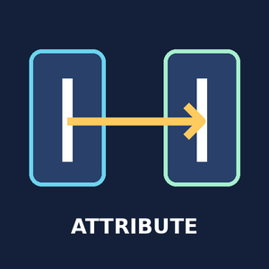
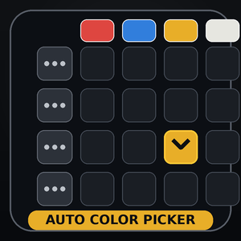
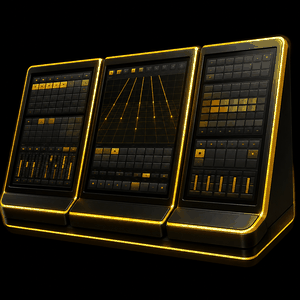
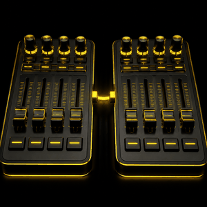

TOOLS FOR THE PROGRAMMER
Less setup.
More show.
A growing collection of grandMA3 plugins by Aaron Wade. Find the current revision, download it, and get back to programming.
THE COLLECTION
Your tools. One place.
11 plugins · Versioned downloads
API Info
Export grandMA3 API information for plugin development and troubleshooting.
View plugin ↗
v1.2.1Attribute Clone
Clone selected fixture attributes with separate source and destination lists.
View plugin ↗
v5.0.3.0Auto Color Picker
Build a color picker from your Groups and Color presets in the current DataPool.
View plugin ↗Cue Beacon
Create cue-driven executor beacons with configurable start and stop cues.
View plugin ↗Hippo Remote
Server Command's Hippo-only interface for selecting and controlling Hippotizer servers.
View plugin ↗MA Search
Find DataPool objects and navigate to them through a dedicated search window.
View plugin ↗ v2.3.15
v2.3.15Server Command
Manage Hippotizer servers, consoles and DMX network nodes from your MA3 session.
View plugin ↗
v1.0.41Touch Configurator
Remap touch surfaces and transfer views across your connected displays.
View plugin ↗Tour Location
Set touring locations, session timezone and time synchronization settings.
View plugin ↗
v1.0.28Wing Configurator
Identify executor surfaces, assign Wing IDs and organize your desk.
View plugin ↗ v1.1.6
v1.1.6WLT Plugin Updator
Scan drives, compare versions, and download or install your Wade plugins.
View plugin ↗